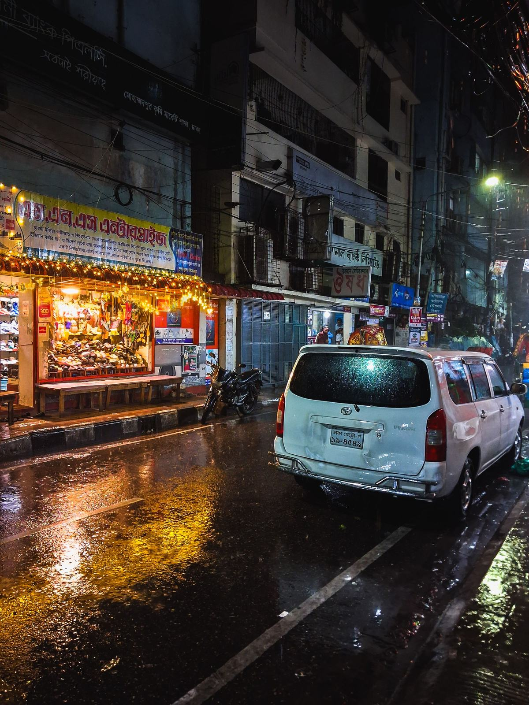
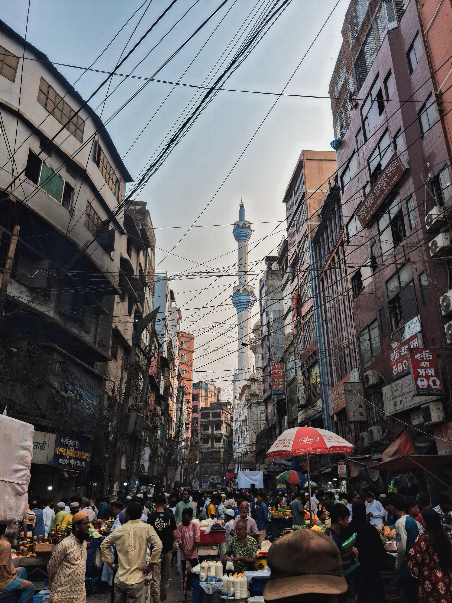
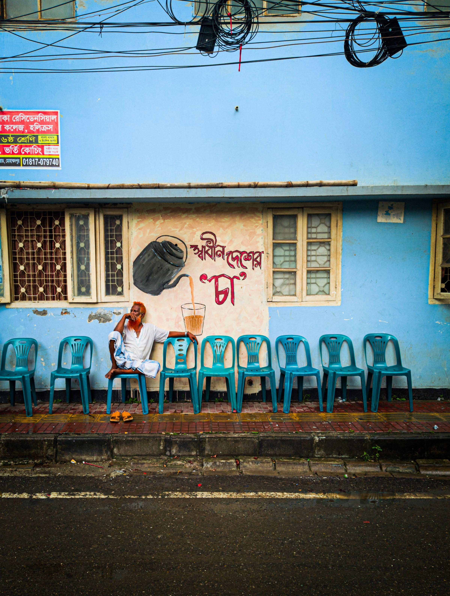
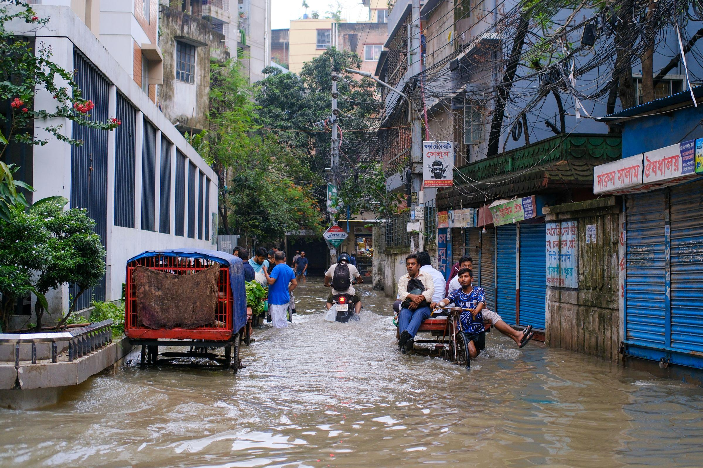
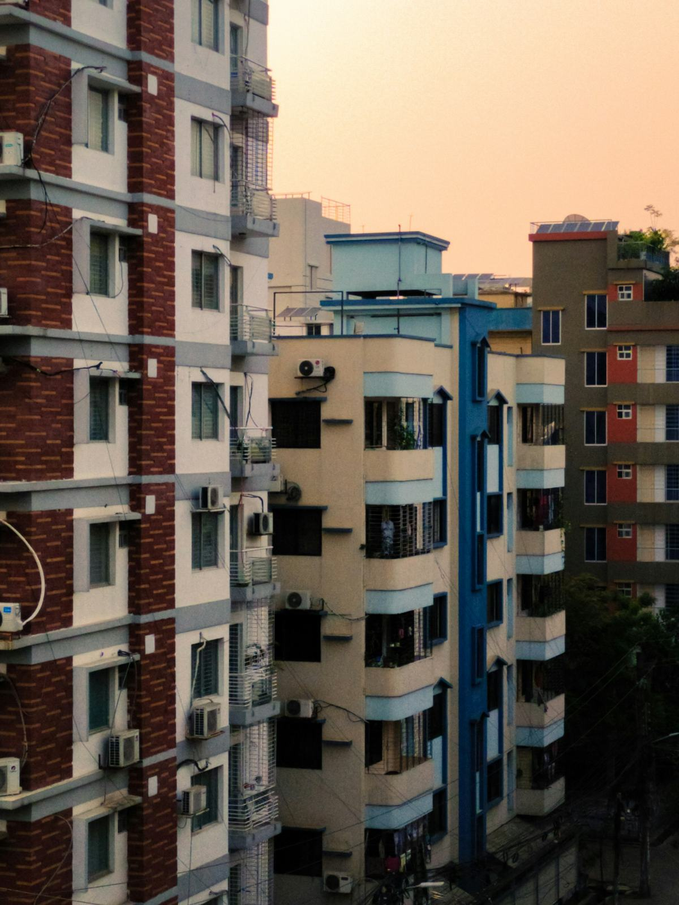
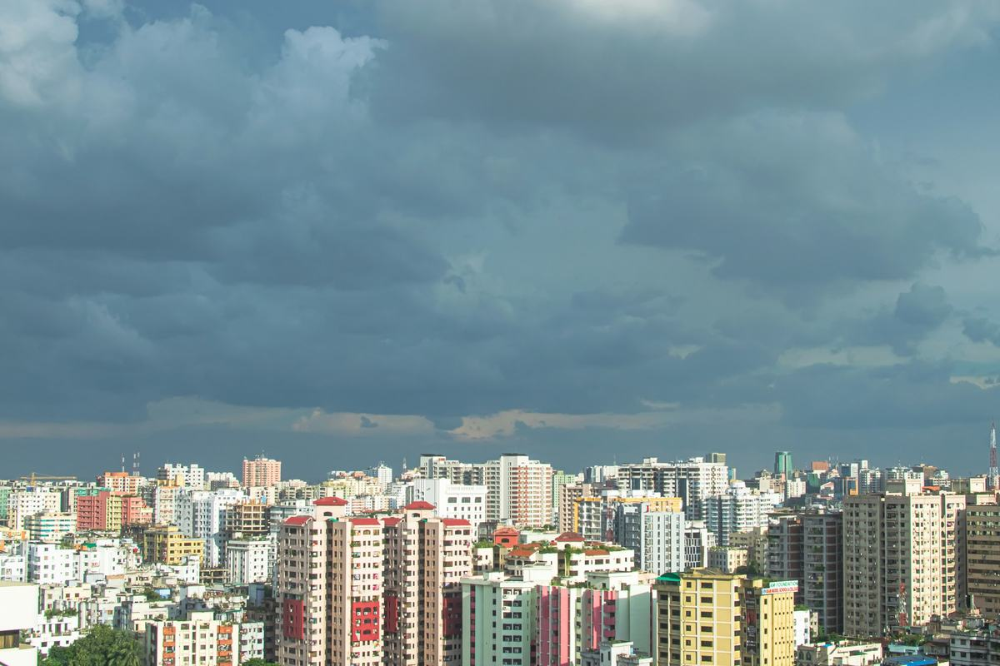

Bari
বাড়িFor a whole apartment building
Tk 2,500 /month
+ Tk 199 for each flat that joins
- Cameras for the stairs, gate and parking
- Wi‑Fi for the roof and guard room
- A notice screen in the lobby
- Private cloud for every flat that joins







পুরনো যন্ত্র, নতুন কাজ
Old phones, TV boxes, laptops and routers still work. We give them second jobs in homes, shops and on rooftops, and you can earn from what they aren't using. Then we look after them.
Every home has a drawer of them. Left there, they become waste. Left plugged in and never updated, they become a risk.
of e‑waste in Bangladesh in 2022. Very little of it was formally recycled, and much of it still worked.
Global E‑waste Monitor 2024home devices hijacked into a botnet that rents out people's internet to criminals.
FBI, BADBOX 2.0 warning, June 2025new devices we need to manufacture. The hardware already exists and is already paid for.
Some jobs need one extra part, such as a storage disk.We collect each device, erase its old data, rebuild it for one job, and connect it to an encrypted network that we look after.
A phone from a few years ago still has a better camera than cheap CCTV. Wiped and mounted, it watches the stairs.
With a storage disk attached, it holds every photo the family takes, at home rather than abroad.
Rebuilt with open software that still gets security updates, it covers the roof and the guard room.
Committee notices and the water schedule, on the wall where everyone sees them.
Its battery rides out load-shedding while it records the cameras and keeps the backups.
A building of 30 flats already owns a full digital setup. It's just sitting in the wrong rooms. Choose a device to see where its second job could be.

আমাদের পাড়া, আমাদের যন্ত্র
Old devices are more useful pooled than alone. The flats in a building keep each other's backups safe, share screens and cameras, set up a corner for homework, and pass on what they don't need.
Try it: pick your flat, then break its disk.
Your backup is encrypted and split into four pieces, kept by neighbours in four other flats.
Old monitors and TVs in the lobby, the lift and at the gate carry notices, lost and found, and paid local ads. The income goes to the building fund, and the posters come down.
old monitors, TVs, a TV boxEvery flat's backup is encrypted, split and kept by neighbours. A dead disk, a theft or water in one flat loses nothing.
spare disk space across the buildingAn old tablet replaces the paper visitor register. Old phones watch the gate and stairs, and only the people the committee names can see the recordings.
a tablet, old phonesWhen the power goes or comes back, the tank runs low or the lane starts to flood, the building's WhatsApp group hears about it straight away.
old phones on chargersTwo old laptops and an offline library in the common room, the mosque or the madrasa. Homework without mobile data.
laptops, a TV boxA phone too old for you is a good first phone for a student, or a bKash phone for the building's guard. We wipe it, fix it and hand it on in the neighbourhood.
phones, tablets, laptopsAn old laptop sits idle most of the day. A disk sits half empty. Members rent that spare computing and storage to researchers, startups and other members through amader.cloud, and earn credit for it.
Pay by bKash, Nagad or bank transfer. Cancel any time and keep your devices and everything on them.
For a whole apartment building
+ Tk 199 for each flat that joins
For one home
Up to 3 devices
For a shop, clinic or office
Up to 5 devices
Computer labs for schools, built from retired laptops, with a library that works offline.
Retiring laptops? We wipe each one with a certificate, and the working ones become school labs.

Dhaka. Photo: Al Amin MirCompanies pay us to retire devices. Homes, buildings, shops and schools pay us monthly to run them. The hardware in between costs almost nothing, and every new building adds backup space for the others.
Files and recordings stay on your own devices. Copies kept elsewhere are locked with a key only you hold.
Each device's old data is erased before it gets a new job, and we keep a record you can ask for.
Cancel and you keep your devices and everything on them. No lock-in.
The details are in our privacy policy.
Rebuilding our first 40 donated devices and measuring how they perform.
Two Dhaka apartment buildings and one school lab.
Plans open to every building, home and shop in Dhaka.
More device types, more schools, and a second city.
Usually not. It gets one new job, for example as a camera or a home server. If you still use a device every day, keep it and give us a spare.
Your files stay on your own device at home. Copies stored in other members' homes are locked with a passphrase only you know, so the people storing them can't read them. And we erase every device's old data before it gets a new job.
Small devices can run from the same mini UPS that keeps your router on, and laptops have their own battery. Anything else shuts down safely and starts again when the power comes back.
You keep your devices and everything on them. We help you move anything you need, then remove our access.
We keep useful parts for repairs and send the rest to a formal e‑waste recycler, with a receipt.
আমাদের ডেটা, আমাদের ঘরে
We'll visit, check them for free, and show your committee what they could do.